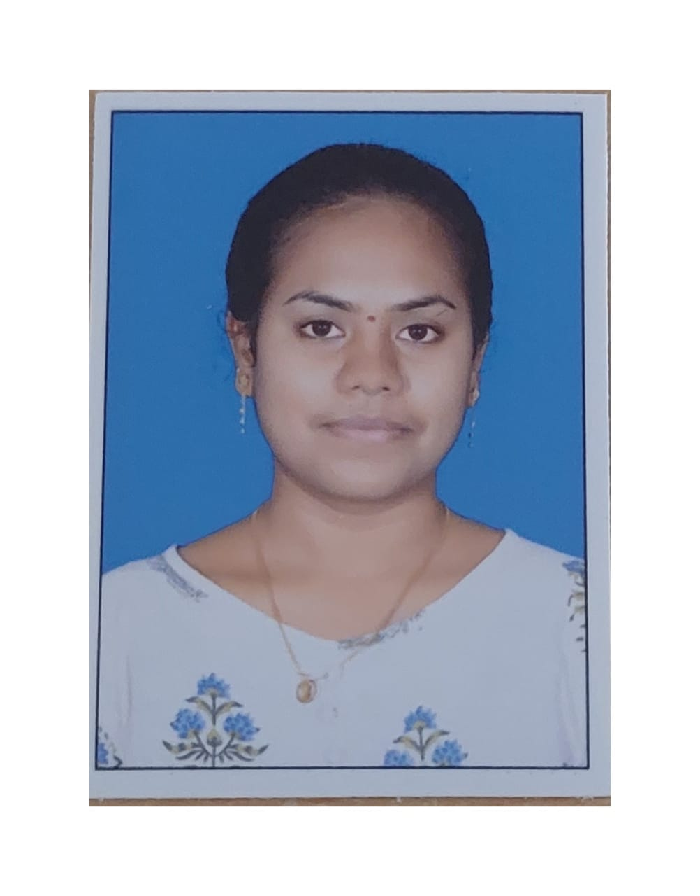

<!DOCTYPE html>
<html lang="en">
<head>
    <meta charset="UTF-8">
    <meta http-equiv="X-UA-Compatible" content="IE=edge">
    <meta name="viewport" content="width=device-width, initial-scale=1.0">
    <title>My Resume</title>
    <style type = "text/css">
        table {
            border : 2px soild;
        }
        table tr th , table tr td{
            border : 1px solid;
        }
</head>
<body text ="White" bgcolor ="Black">
    <h1 title = "Contact No : 9160876080
Email : lakshmichaithanya13@gmail.com" ><Strong><u><center>Tirupathi V S Lakshmi</center></u></Strong> </h1>
<right></right>
    <p>Im Tirupathi V S Lakshmi  a recently passed out graduate in the stream of <b>ECE</b> from <b>Sree Venkateswara college of engineering</b> with an aggregate of 75%.<br>Iam technically good at C, Java, Python.<br>Iam very much instered to become a <b>Full Stack Developer</b>, so in that process I started  learning HTML.</p>
    <h2><b><u>Career Objective</u>:-</b></h2>
    <p>To work for an esteemed organisation which provides challenging and professional environment where my skills and knowledge can be best utilised and imporved which will be helpful for my career growth so that I will be helpful to the growth of organization.  </p>
    <h2><strong><ins>Academic Qualifications </ins>:-</strong></h2>
    <p>Completed <strong>Bachelor of Technology</strong> in <b>Electronics and Communication Engineering</b> from <b>Sree Venkateswara College of Engineering</b> (2018-2022) with an aggregate of <b>75%.</b><br><b>Intermediate M.P.C</b> from <b> Narayana Junior College</b> (2016-2018) with 96.5%.<br><b>Secondary Education</b> from <b>Ratnam High School</b> (2016) with <b>9.8 CGPA.</b> </p> 
    <h2><b><u>Specilization</u>:-</b></h2>
    <p><b>Technical Languages : </b> C, JAVA, PYTHON and HTML.<br>
        <b>Application Package & Tools : </b> Ms Office and VS Code.<br>
        <b>Current Learnings : </b> Enrolled in HTML Course from udemy.</p>
        <h2 bgcolor= "white" text = "black"><b><u>Strengths</u> :-</b></h2>
        <ul>
            <li>Work with positive attitude.</li>
            <li>Self Confidance and Great patience.</li>
            <li>Smart worker and Quick learner.</li>
            <li>Effective Speaking skills and Motivational Skills. </li>
            <li>Leadership skills.</li>
            <li>Fast learner and can grasp things that are new to me.</li>
        </ul>
        <h2><strong><u>Personal Profile</u> :-</strong></h2>
        <p><b>Name</b>        : TVS Lakshmi<br>
        <b>Father's Name</b>  : T. Hari kumar<br>
        <b>Date of Birth</b>  : 27-03-2001<br>
        <b>Marital Status</b> : Single<br>
        <b>Nationality</b>    : Indian<br>
        <b>Languages Known</b>: Telugu, English, Hindi and Tamil</p>
        <h2><b><u>Project</u> :-</b></h2>
        <ol>
            <li><b>Mini Air Cooler :-</b>
            <p>I did this project in my 3rd semester. It is a simple electrical project. It consists of a motor ,a fan  and a plastic box with tiny pores at top . The box is filled with water to certain level. When the motor is on the fan rotates and cool breeze flow out of the cooler.</p></li>
            <li><b>Crime Analysis and prediction using k-means algorithm :- </b>
            <p>I  did this project in my 8th semester. This project is based on machine learning and the programing language used is python. The main aim of this project is to analyse the crime in particular area and predicting  which type of crime is going to happen in future in  that particular area.</p>
            </li>
            <li><b>Creating my own resume using HTML :-</b></li>
            <p>In the process of learning HTML , I got an idea to creat my resume using HTML. So that, I can share link of my resume instead of sharing DOC, Pdf etc types files. This also stands as an innovative idea and improve my standards in HTML.Here is the link of my resume. <br><a href = "https://thedarklady.github.io/MyResume/MyResume.html">RESUME.</a>
            </p>
        </ol>
        <h2><b><u>Certifications</u> :-</b></h2>
        <ul>
            <li>Python certification form udemy</li>
            <li>Java certification from udemy.</li>
            <li>C certification from w3schools.</li>
            <li>Certification in building a face recognigation app using python from Guvi institute.</li>
            <li>PCB certification from PCB workshop</li>
        </ul>
        <h2><b><u>Amcat Score</u> : -</b></h2>
        <p>I also took <big>AMCAT EXAM</big> on <b>Oct 15, 2022</b> I successfully completed it and my score is shown in below table.</p>
        <table>
            <caption><big><u>AMCAT SCORE CARD</u></big></caption>
         <tr>
            <th>Module</t>
            <th>Score</th>
            <th>Grade</th>
            <th>National Percentile</th>
         </tr>
         <tr>
            <td>ENGLISH COMPREHENSION</td>
            <td><center>510</center></td>
            <td><center>B</center></td>
            <td><center>64%</center></td>
         </tr>
         <tr>
            <td>QUANTITATIVE ABILITY(advance)</td>
            <td><center>640</center></td>
            <td><center>A</center></td>
            <td><center>90%</center></td>
         </tr>
         <tr>
            <td>LOGICAL ABILITY</td>
            <td><center>585</center></td>
            <td><center>A</center></td>
            <td><center>95%</center></td>
        </tr>
        <tr>
            <td>TELECOMMUNICATION AND ENGINEERING</td>
            <td><center>650</center></td>
            <td><center>A</center></td>
            <td><center>99%</center></td>
        </tr>
        <tr>
            <td>COMPUTER SCIENCE</td>
            <td><center>580</center></td>
            <td><center>A</center></td>
            <td><center>98%</center></td>
        </tr>

        </table>
        <h2><b><u>AMCAT Certification Links</u>:-</b></h2>
        <ul>
            <li><a href = "https://www.myamcat.com/certificate/19226551/software-development-trainee/166">Certificate in Software Development Trainee</a></li>
            <li><a href = "https://www.myamcat.com/certificate/19226551/engineering-trainee---telecom-engineering/184">Certificate in Engineer Trainee - Telecom Engineer </a></li>
            <li><a href = "https://www.myamcat.com/certificate/19226551/data-processing-specialist/211">Certificate in Data Processing Specilist</a></li>
            <li><a href = "https://www.myamcat.com/certificate/19226551/telecom-engineer/246">Certificate in Telecom Engineer</a></li>
            <li><a href = "https://www.myamcat.com/certificate/19226551/business-analyst/94">Certificate in Business Analyst</a></li>
            <li><a href = "https://www.myamcat.com/certificate/19226551/proficiency-in-english/284">Certificate in Proficience in English</a></li>
            <li><a href = "https://www.myamcat.com/certificate/19226551/in-english-comprehension/283">Certificate in English Comprehension</a></li>
        </ul>
        <h2><b><u>Extra Activities</u> :-</b></h2>
        <ul>
            <li>Participated in paper presentation on nanotechnology in Visvodaya Institute of Technology and won 2nd prize</li>
            <li>Participated in paper presentation on Bio Battery in Narayana Engineering College and won 1st prize </li>
            <li>Participated in paper presentation on Plastic Roads in Sree Venkateswara College of Engineering and won 1st prize.</li>
            <li>Participated in many essay writing Competations and won prize.</li>
            <li>Participated in many jam secetions and seminars.</li>
            <li>Beside technical ascepts I also participated in many Dance shows and Dramas from childhood.</li>
        </ul>
        <h2><b><u>Decleration</u> :-</b></h2>
        <p>Here by I declare that the above mentioned information is true to my knowledge and belief.</p>
        <a href = "https://www.learnvern.com/">Source</a>
        </body>
</html>
